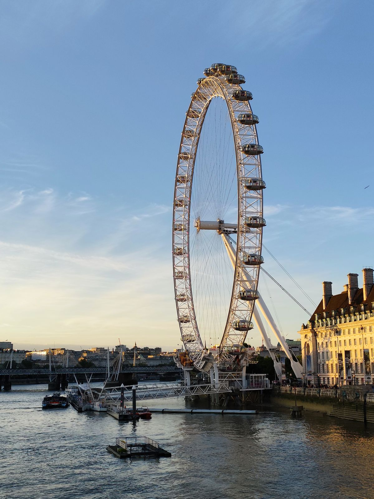
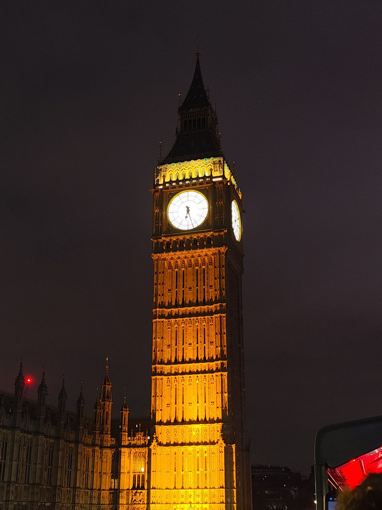
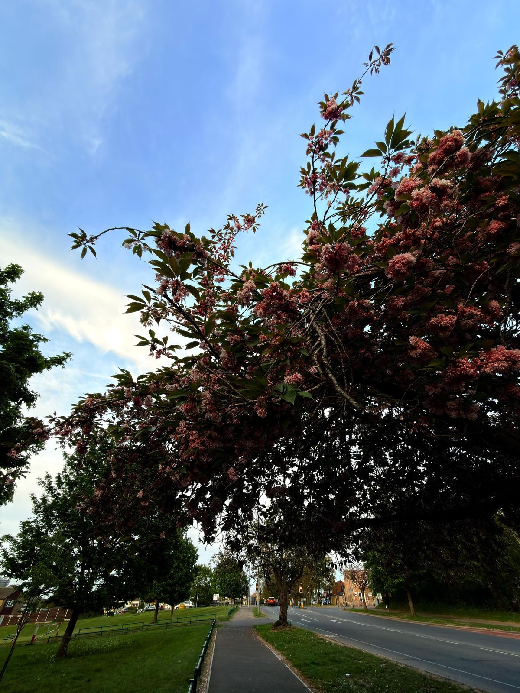
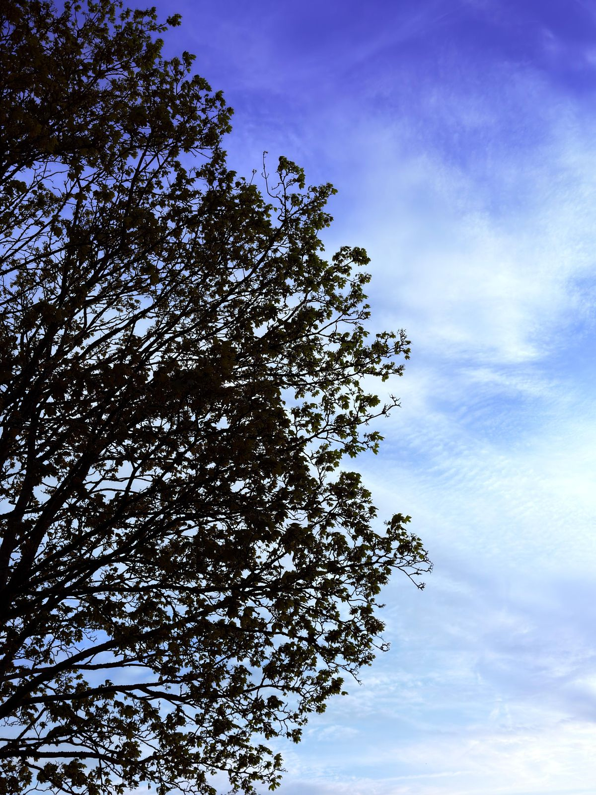
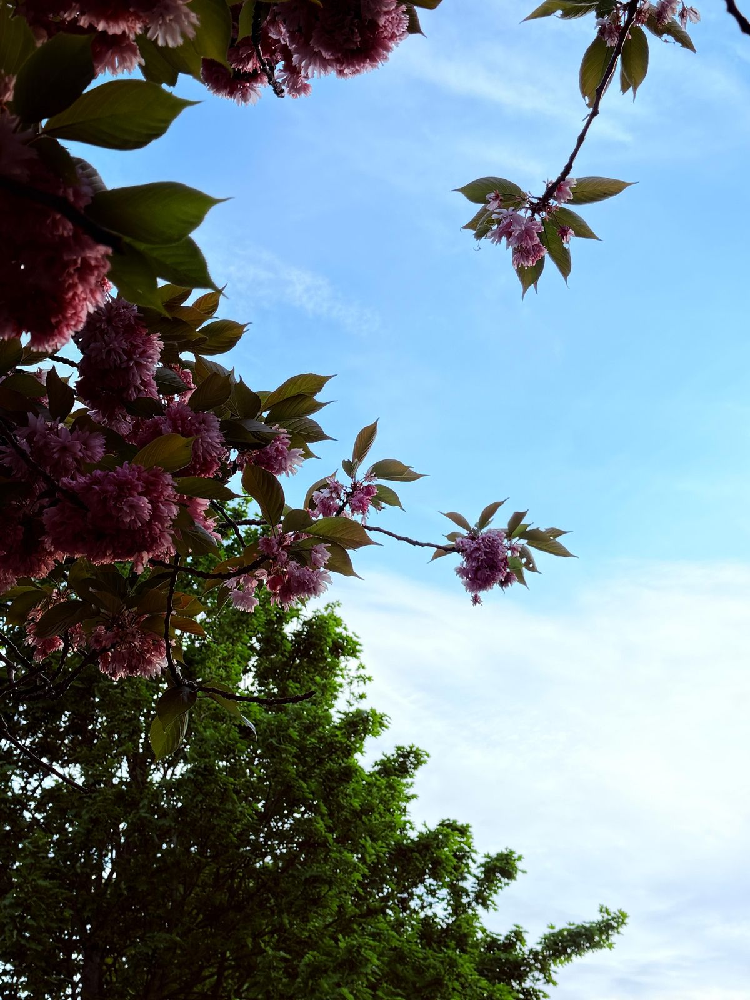
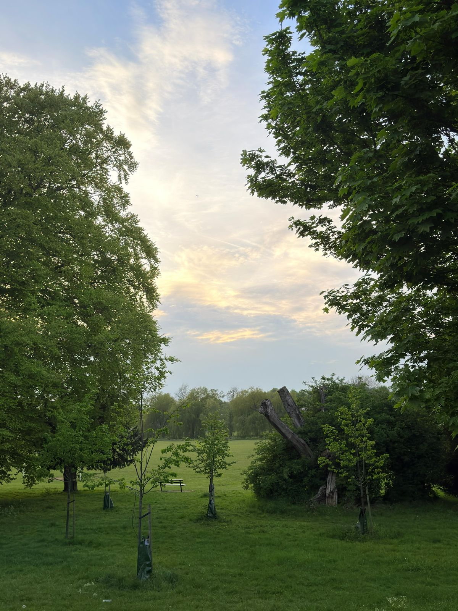
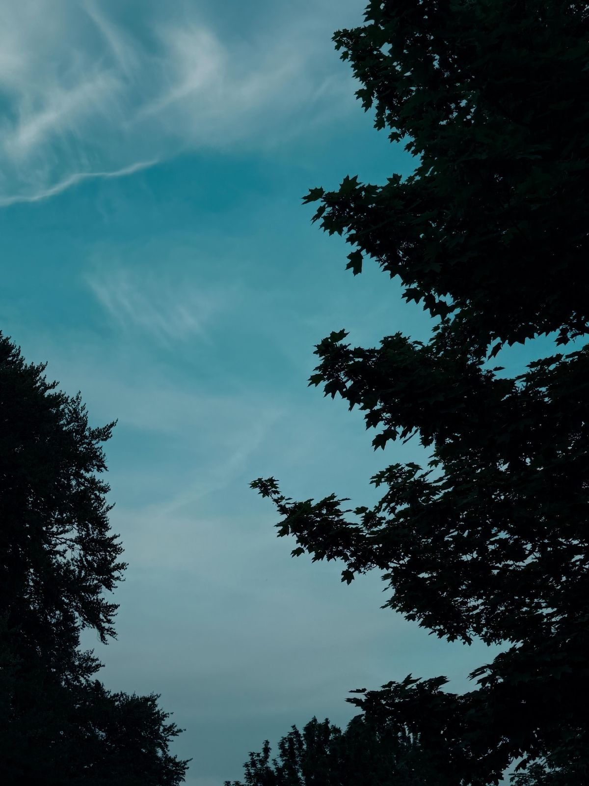
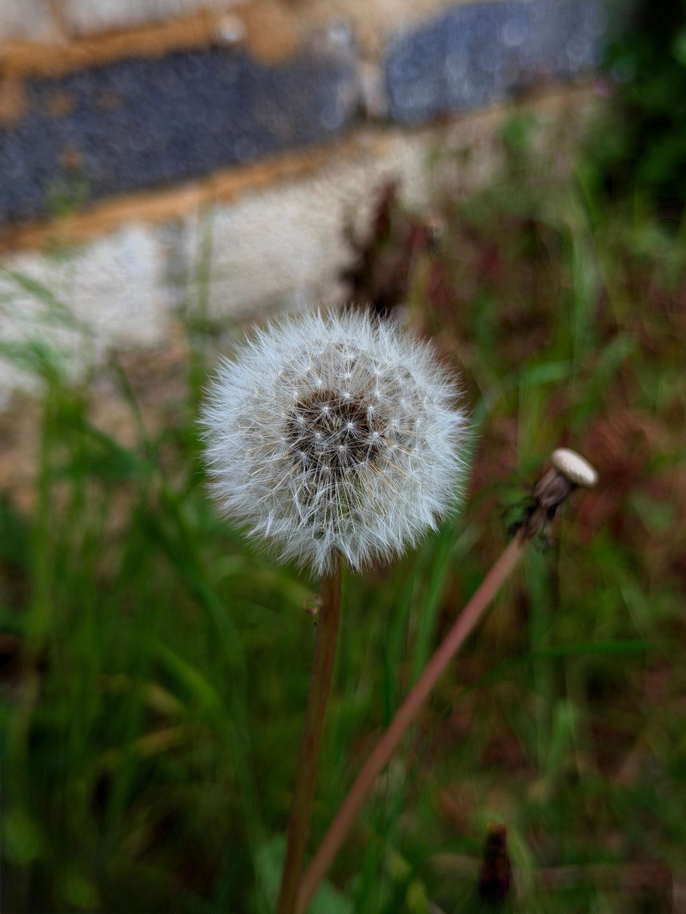

Short video · Cinematic · 0:15
Video Editor · Motion Designer · Available for commissions
©2025
NEVIN
I can edit short, long, or any type of video.
Software — CapCut · After Effects · Alight Motion
Visual profile — 01
London · India → Worldwide

01 About — Visual profile
I am Nevin,
motion
graphics
designer.
Video Editor
Creative Director
Hi, I'm Nevin — a passionate video editor specialising in cinematic storytelling and high-quality motion design. I transform ordinary clips into visually stunning edits using precise beat-matched cutting, layered transitions, colour grading and typography that carries the mood of a scene.
Whether it's character edits, cinematic reels or social media content, my goal is always the same — to create edits that leave a lasting impression long after the last frame.
Selected work.
Frames &
motion
A short sample of motion work and the photography I shoot and grade for reference plates.
Nevin
Motion Graphics Designer
Short video
Short video · Short video
Short video · Character · 0:18







Toolkit
The tools behind the work, shown
only when they exist in the creator profile.
100%
CapCut
Primary suite — full command of the workflow, beat-sync and transitions.
Primary
52%
After Effects
Compositing & motion graphics — actively growing.
Growing
59%
Alight Motion
Keyframe effects & shape animation on mobile.
Mobile
—
Sound design
Beat matching, SFX layering & mix for reels of any length.
IncludedMy accounts
Where the edits live
Two pages, two purposes — main feed to personal moments and behind the scenes.
Commission form
Open in new tab ↗